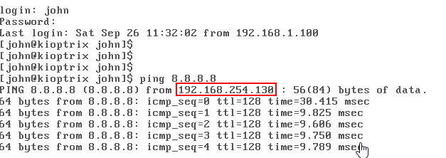

Installing Kioptrix
This is a virtual machine which you can download from vulnhub.com. Once downloaded you can try break into the network - this is good for training your skills like the bugcrowd website. Vulnhub is buit into your Kali machine.
The goal of the Kioptrix app is to get to the root access of the machine. There are many ways it can be done also to test your skills!
Kioptrix is from the vulnhub website but we will download ot from the course website: tcm-sec.com/kioptrix.
Download the package ova file and then open your VMWare and open the machine.
Open the VMWare or your virtual box to open a virtual machine. Navigate to the downloaded file then select the virtual machine to open.
Go to the setting of the virtual machine - we can change the the memory to 256MB (but not any lower).
In Network Adapter change the settings to NAT.
Now you are good to go, play the machine to start the virtual machine.
Use these details to login
To find the machine's IP address we can ping a random IP address (it doesn't have to be valid).
ping 8.8.8.8

We can also use arp-scan which is a built in tool which is similar to a net scan.
sudo arp-scan -l

Because I have a few virtual machines installed, I have highighted the macthing IP address found in the Kioptrix machine. You can always run ip a to find the IP address of your machine quickly.
With this we can start running scans.
192.168.254.130